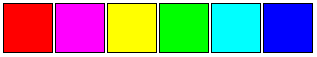
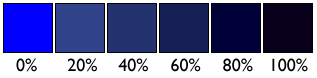
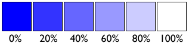
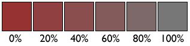

A hue is a pure color; it contains no black or white. It is the key part of a color that allows it to be identified as red, green or blue.
A shade is a hue with black added
A tint is a hue with white added
A tone is a hue with gray added
